29.2.2. Die Positioning Method
29.2.3. How to add Swaging operation
29.2.11. Scheduled Positioning
The swaging operation guides the user to setup the process in simple manner using Pass table, Reheat settings, Primitives and Movement controls. The Pass table helps the user to setup swaging operation in a single action with the die feed and rotation of the billet entered. The pass table helps the user to setup multiple passes easily, by copying settings from one pass to other. The operation can be set using either two dies or four dies as per user requirement, usually 4 dies are used in swaging. Swaging bites stops based on the swaging stroke defined.
Auto Calculate Bites: By activating this option, system will automatically calculate the no. of bites to be simulated based on Axial feed per bite for the given Billet length.
Number of Bites: By using this option, user can define required no. of bites for the cogging simulation manually.
Note: What is meant by Bite?
Bite is nothing but how much length to be deformed for a given feed.
Axial Feed Rate: It is the distance that a die set moves per bite in axial direction along billet length (Nominal Bite).
E.g.: - Suppose if we define axial feed rate as 10 mm and Billet length as 60 mm, the die set will travel 10mm length 6 times after each bite so it covers entire length with 7 bites including initial bite.
Radial feed per bite: it is the distance that a die set moves per bite in radial direction.
Cross-Section Thickness: Cross-section thickness is the thickness to be maintained on billet in the direction of primary die movement. It is also used as stopping control and also to position dies initially. It is not used in swaging process.
Movement Direction: It specifies particular direction (+X or -X) of the die axial movement.
Rotation per Bite (Deg): By using this option user can set the angle for the billet to rotate after each bite.
Rotation per Pass (Deg): By using this option user can set the angle for the billet to rotate after each pass.
0 - % (Percentage or fraction of billet length between 0 to 1): Start or stop position is specified as a fraction of the billet length from the respective billet ends, taking cogging direction into consideration.
1 – ref (Reference points): Start or stop position is specified by picking two points on the billet, only the x coordinates are displayed in the table.
2 – dst (Absolute distance from billet ends): Start or stop position is specified by distance from respective billet ends, taking cogging direction into consideration.
3 -ofst (Offset): Start position is specified as a relative distance from previous die position.
More details about die positioning methods are explained in Cogging Setup section for more information refer section 29.1.2.Die Positioning Method
Swaging operation is available under the 3D Cogging operation and is accessible from MO Wizard that can be opened from Main GUI. In MO wizard, Cogging Operation can be added from explorer tab by clicking on button next to 3D Cogging and selecting the process type as Swaging in process settings window as shown in Fig. 29.2.1. Also, user can add the operation by drag and drop into the Operation Editor.
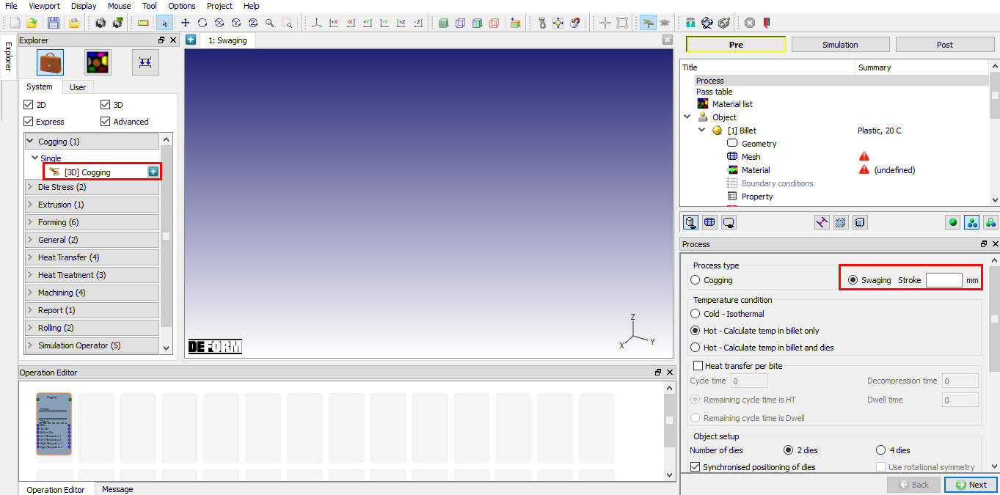
Added Cogging operation in Operation Explorer
Below Fig. 29.2.2. shows the options to set the process conditions, these options are explained below.
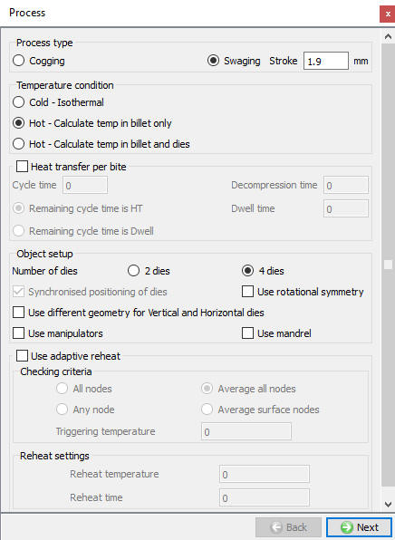
Process window
Process type
Cogging: It is a process of increasing length of billet by decreasing the diameter of billet.
Swaging: Modelling of rotary forging processes is known as Swagging.
The objective of swaging is modeling of incremental forming of multiple bites/passes in a single operation with automatic stops and restarts between each step of the process.
Swaging wizard is used to generate the master files and the billet, die and mandrel keyword files with necessary information about process, geometry and materials to run a swaging simulation.
Temperature Condition
Swaging is usually a cold working process, it is also used in semi hot and hot range temperature range. So user have option to select the thermal calculations for workpiece and dies.
Cold Isothermal: In this process, we will be able to see only Deformation of Billet.
Note: If we select Cold Isothermal Radio button Heat transfer options would get into greyed out mode.
Hot - Calculate Temp in Billet Only: In this process, we are able to calculate temp in billet only. As no thermal calculations are carried over on dies and manipulators, no mesh is generated for them. We will able to perform both Heat Transfer and Deformation operations.
Hot - Calculate Temp in Billet and Dies:In this process, we are able to calculate temp in billet, dies and manipulators. All objects should be meshed as we need to perform thermal calculations on billet, dies and manipulators. We will able to perform both Heat Transfer and Deformation operations.
Heat transfer between the bites can also preformed by checking the Heat transfer per bite check box as shown in Fig. 29.2.2. More details about these operation cycles are explained in Cogging Setup section Heat transfer per bite.
Object Setup
Number of Dies: Swaging process is carried out either by using 4 dies or 2dies depending on the cross-section and amount of deformation. User can select either 4 Dies or 2 Dies based on the process to be simulated. Only for 4 dies Rotational symmetry of workpiece option is available, this can be selected by checking the "Use rotational symmetry" checkbox.
Use different geometry for Top and Bottom dies: In swaging process if the geometries in a die set are different then by checking this checkbox we will be able to define different types of geometries for Top die and Bottom die.
Use Manipulators: If manipulators are used then user can turn on this check box to activate Manipulator definition and its settings. It is not used in swaging process (used in cogging process).
Use Mandrel: By checking this checkbox user will be able to use Mandrel for the setup where hollow workpieces are processed. It is used especially for the swagging process to form internal profiles with close tolerances, which may be cylindrical, tapered or stepped. Swaging over a mandrel allows production of internal profiles like splines, non-circular forms, helical forms, etc.
Use rotational symmetry: By checking this checkbox, user will be able to define symmetry on the workpiece, see Fig. Using symmetry the simulation time can be reduced.
Reheating of the workpiece between passes can be simulated by using the Use adaptive reheat check box in process window and defining the inputs. For its more details refer Cogging Setup section Use Adaptive Reheat.
Below Fig. 29.2.3. shows the Pass Table. In this table we will define the information of entire pass for the swaging setup. Various options available in pass table are explained in Swaging Terminology. Pass information is copied from previous pass whenever a new pass is added and necessary information can be edited based on the process requirement. Please refer 29.2.1..Swaging Terminology.
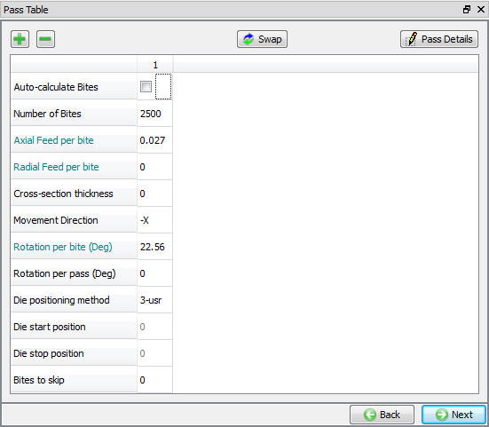
Pass table window for Swaging process
 Button: This button is used to increment pass by one.
Button: This button is used to increment pass by one.
 Button: This button is used to delete the existing pass.
Button: This button is used to delete the existing pass.
: If we click on swap button, the pass parameters are arranged horizontally for display. (See Fig. 29.2.4.)
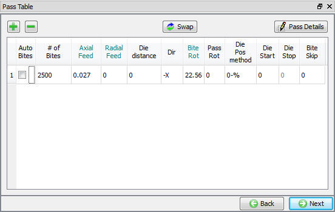
Pass table window information in Horizontal direction after swapping
: User can use this option to enter advanced pass information applicable to all passes, see Fig. 29.2.5.
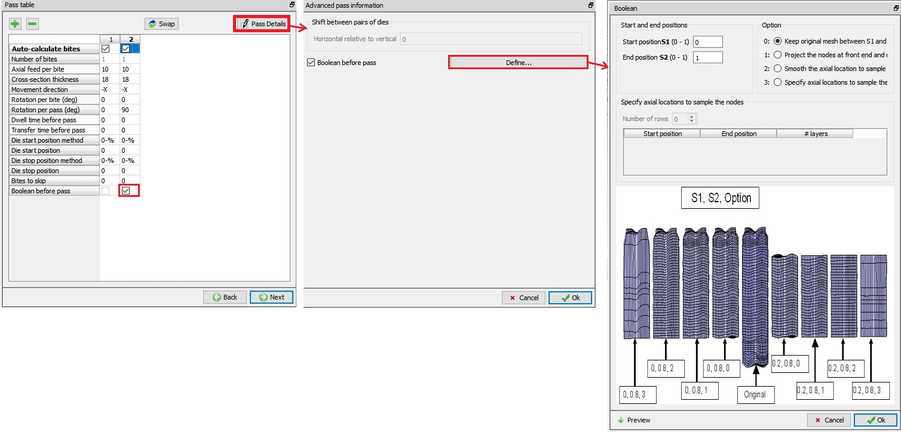
Advanced Pass Information window
Shift between pairs of dies:
This option is applicable only when 4 dies are used and the amount of the deformation, i.e. forging stroke, is different for horizontal set of dies and vertical set of dies used in cogging. For more details refer Shift between pairs of dies in section Pass table.
In order for a simulation to achieve a high level of accuracy, it is important to have an understanding of the material properties required to specify a material used in DEFORM.
When setting up a simulation, material properties have to be specified for the objects. In MO Swaging operation, all the materials required for the operation can be loaded at a time and the required material can be selected later as the problem is setup.
User can add material by selecting  load material data from library by clicking on
load material data from library by clicking on  button after selecting
required material from the categories as shown in Fig. 29.2.6.
button after selecting
required material from the categories as shown in Fig. 29.2.6.
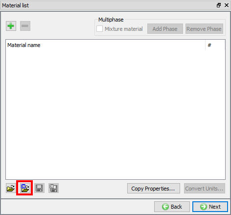
Import material from library window
(or)
Another way of adding material is click on the material icon of the explorer tab, a list of materials from library that are divided into different categories will appear as shown in Fig. 29.2.7. Select required material then click on  button. Also, user can add required material by drag and drop into the material window.
button. Also, user can add required material by drag and drop into the material window.
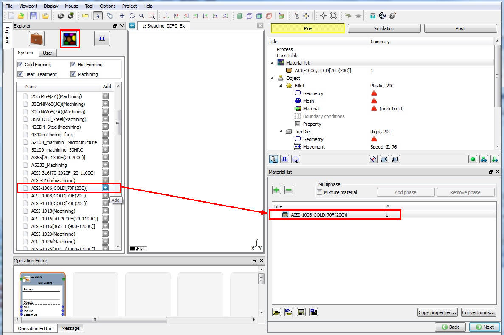
Adding Material from Explorer tab
(or)
In material list window, by clicking on  button, new material can be added. After adding material click
button, new material can be added. After adding material click  and select respective
tab to define required data for the simulation as shown in Fig. 29.2.8.
and select respective
tab to define required data for the simulation as shown in Fig. 29.2.8.
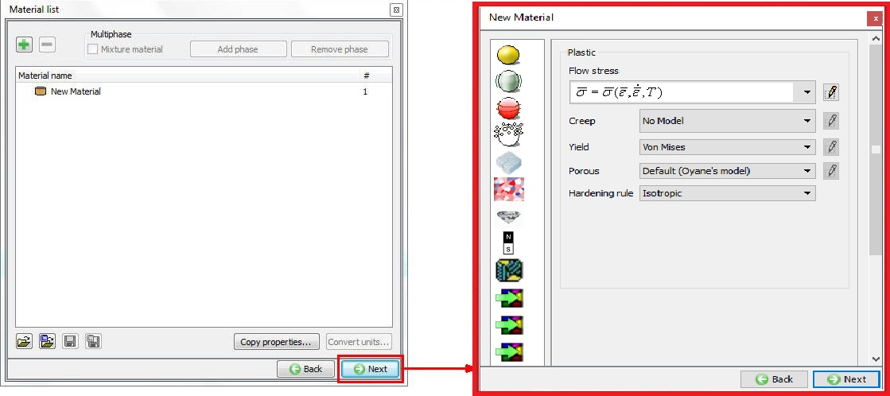
Add material from Material List window
Import Material data from a file  : It imports the material from a .Key or .DB file.
: It imports the material from a .Key or .DB file.
Load Material data from Library  :It imports material from Library.
:It imports material from Library.
Save the Material data to a file  : It saves the material to a file.
: It saves the material to a file.
Save the Material data to Library  : User can save material to the library using this option and can be loaded back as required in future for other
simulations.
: User can save material to the library using this option and can be loaded back as required in future for other
simulations.
Mixture material
“Mixture” materials (MSTMTR) are used when a phase transformation is to be modeled in the simulation. The transforming material is modeled as a “mixture” of its constituent phases. For example, carbon steel might be modeled as a mixture of Austenite, Pearlite, Bainite, and Martensite. If a mixture material is defined, transformation rules should be defined which govern the transformation of one phase into another.(See Fig. 29.2.9.)
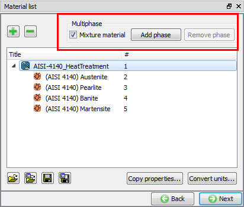
Adding Mixture material
Copy Properties
It is used to copy the regular material properties like plastic, elastic, thermal etc. from one material to other while creating/defining the material data as shown in Fig. 29.2.10. In this dialog, source and destination for copying the properties and properties to be copied must be selected.
Copy material properties window
Convert Units 
It is used to convert the unit system of current selected material from material list from SI to English or English to SI or user can use any other multiplication factor as shown in Fig. 29.2.11. Selecting
the button will display the respective multiplication factors for converting from  and
and  , then selecting
the Convert button will convert and close the conversion window. This conversion table can be saved using save button and can also be edited by using wordpad/notepad and loaded back UNITCONV.DAT file using load button.
, then selecting
the Convert button will convert and close the conversion window. This conversion table can be saved using save button and can also be edited by using wordpad/notepad and loaded back UNITCONV.DAT file using load button.
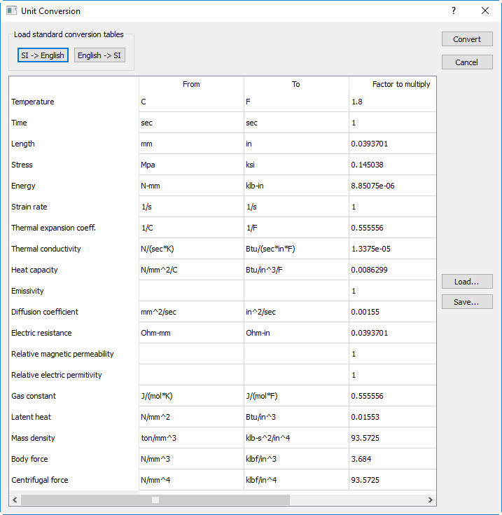
Unit Conversion window
Below Fig. 29.2.12. shows the object window information. This provides option to maintain the element size or shape when more deformation takes place as in cogging. Also to straighten the workpiece in case of bending after each bite or pass option provided. These are useful in case of cogging operation, for details about these options refer 29.1.8. Object window
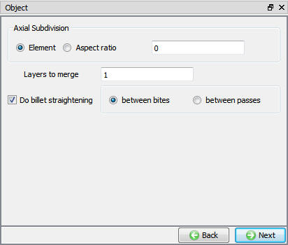
Object window
In this window user can define required temperature for the object and select type of the object as shown in Fig. 29.2.13. For billet by default the object type selected is Plastic. User can also import object from other DB’s or Keyfile’s using button and browsing respective file.
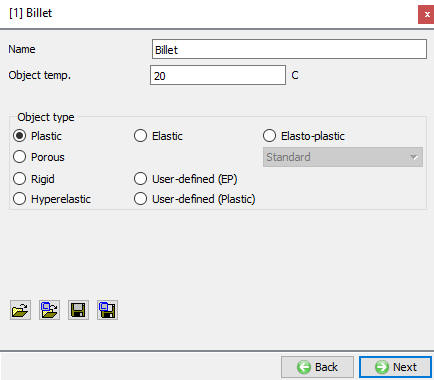
Assigning temperature for billet
Geometry
Geometry window is used to define the geometry of an object as shown in Fig. 29.2.14. Only define primitive
field will be in active mode rest other options will be in greyed out mode when no geometry is defined. Once after creating geometry all the options will be activated.
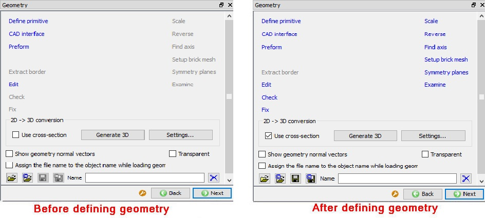
Geometry Window
Define Primitive
We have three different types of Geometry primitives for billet, Ring, Octagon and Rectangle as shown in Fig. 29.2.15.
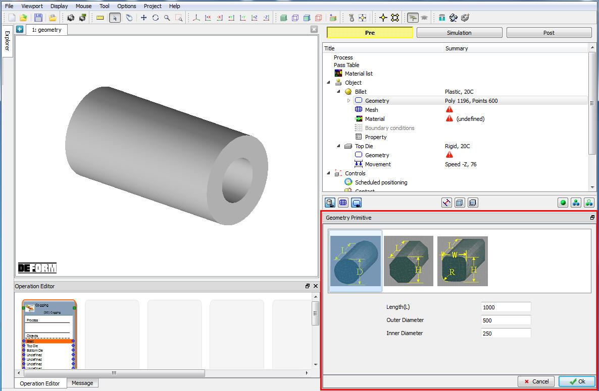
Geometry primitive window for full part
For Rotational symmetry only hollow cylinder primitive will be available as shown in Fig. 29.2.16.
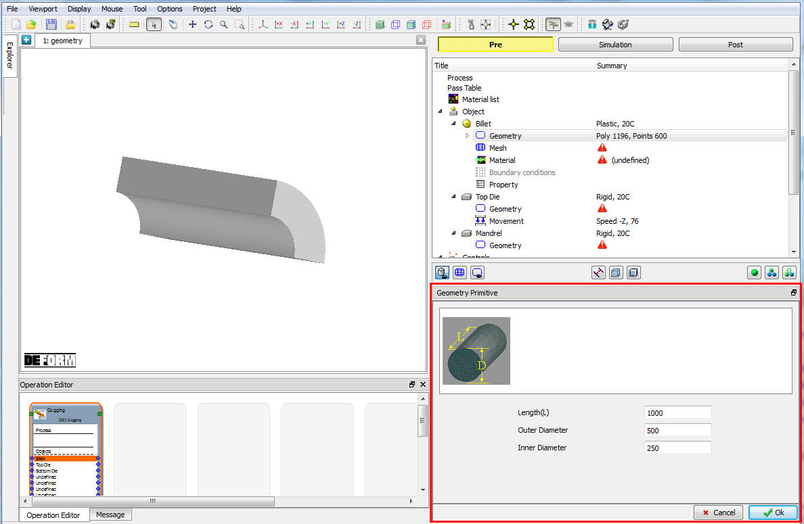
Geometry primitive window for rotational symmetry
For more information about geometry options, please refer 12.3. 3D Geometry Data Definition
Mesh
Brick mesh
The below Fig. 29.2.17. shows the mesh generation options for Brick Mesh in guided mode.
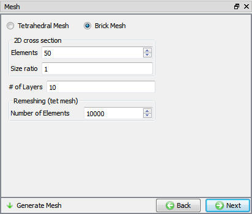
Brick Mesh options in Guided mode
2D cross section
Elements: The number of mesh elements represents the approximate number of elements that will be generated on a 2D cross-section of an Object.
Size Ratio: Size ratio is the ratio of maximum element size to minimum element size on 2D cross-section.
No. of Layers: It is used to control the thickness of mesh layers in axial direction. User can define the required number of layers for the mesh generation. As number of layers is increased, mesh will be denser and the thickness of the element decreases in axial direction. similarly, if number of layers is decreased then element thickness in axial direction will be increased and will see less number of layers.
Remeshing (Tet mesh) : If there is a huge deformation and brick mesh fails to go for remeshing, then system will opt to tetrahedral mesh automatically and generates mesh based on the settings defined.
Number of Elements: The number of mesh elements represents the approximate number of elements that will be generated on an Object. The defined number of elements will be taken, when it hits the tetrahedral remeshing.
Generate Mesh : The mesh can be generated by clicking  .
.
Tetrahedral Mesh
The below Fig. 29.2.18. shows the mesh generation options for Tetrahedral Mesh in guided mode.
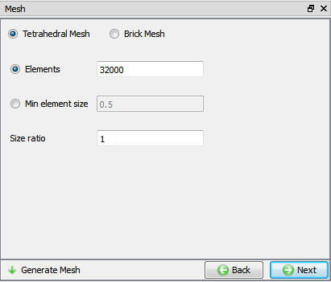
Tet mesh options in Guided mode
Elements : The number of mesh elements represents the approximate number of elements that will be generated that will be generated on an Object.
Min Element Size: It is the minimum size of the element, while generating mesh it will create the element with respect to the defined minimum element size. Element size will not exceed the defined value.
Size ratio : Size ratio is the ratio of maximum element size to minimum element size on an object.
Generate Mesh: The mesh can be generated by clicking  .
.
In order to control the mesh parameters like size, shape, density, type of elements, etc..., user has to switch to expert mode  for more advanced mesh options. Below Fig. 29.2.19. shows the mesh options available from Expert mode.
for more advanced mesh options. Below Fig. 29.2.19. shows the mesh options available from Expert mode.
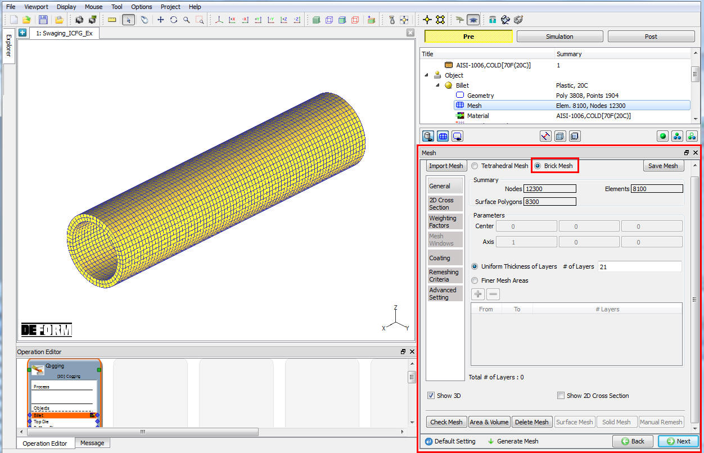
Expert mode Mesh generation window
For more information about expert mode mesh generation options please refer, 13.2. 3D Tet Mesh Generation and 13.3. 3D Brick Mesh Generation
Material
Below Fig. 29.2.20. shows the material window. User can assign required material from the list or can
import from file or library. User can also add new material. For more information on how to assign material, Please refer chapter 10. Material Data
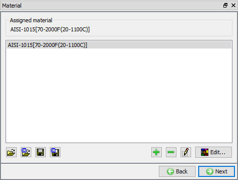
Material window
Once after adding material click on  button, material window will open as shown in Fig. 29.2.21.
button, material window will open as shown in Fig. 29.2.21.
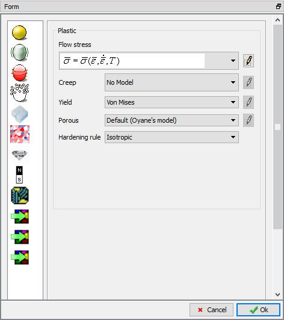
Edit material window
The properties required are dependent on the physical effects being simulated in DEFORM. The material properties that the user is required to specify is a function of the material types that the user is utilizing in the simulation. For more information, Please refer Material in Forming 3D setup.
Boundary Conditions
In Boundary conditions window, user can assign various boundary constraints for an object. Boundary conditions specify how the boundary of an object interacts with other objects
and with the environment. The most commonly used boundary conditions in cogging are heat exchange with the environment for simulations involving heat transfer (See Fig. 29.2..22..),
prescribed velocity for enforcing symmetry (See Fig. 29.2.23.) shows various BCC that can be assigned to an object.
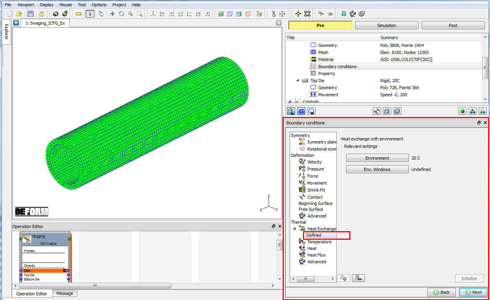
Boundary Conditions window
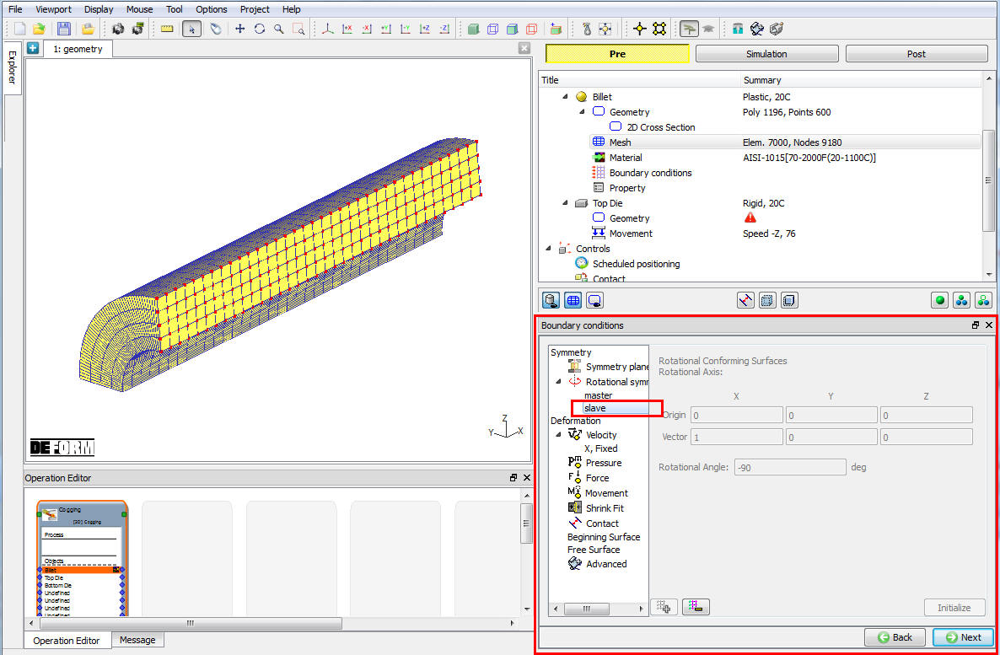
Rotational symmetry BCC assigned
The BCC’s are categorized as Deformation,Thermal, Diffusion and Heating. For more information about these BCC's please refer 14. Boundary Conditions
Property
Miscellaneous object parameters, which affect either thermo-mechanical behavior of the object or numerical solution behavior are specified in the Object-Properties window (See Fig. 29.2.24.). For
more information on these options, please refer 19. Object properties.
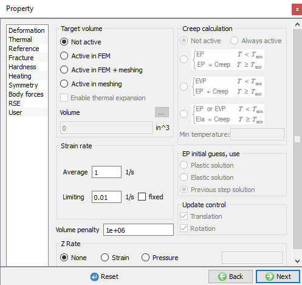
Object property window
In this window, user can define required temperature for the object and select type of the object as shown in Fig. 29.2.25. For Top Die by default the object type selected is Rigid and user can also import object from other DB’s or Keyfile’s using button and browsing respective file.
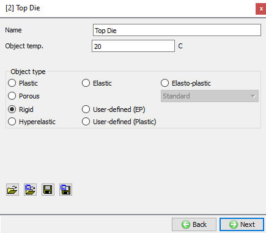
Top Die window
Geometry
Geometry window is used to create the geometry of an object as shown in Fig. 29.2.26. Only define
primitive field will be in active mode rest other options will be in greyed out mode when no geometry is created. Once after creating geometry all the options will be active.
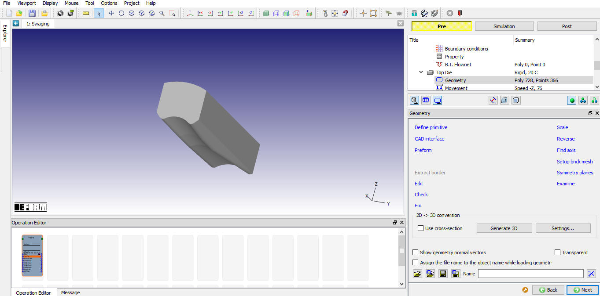
Geometry window
Define Primitive
Below Fig. 29.2.27. shows the Geometry primitive of Die. Only the flat surfaces die primitive is available but user can import (STL,GEO,PDA,NAS and UNV) and the die with profiles normally used in swaging using button.
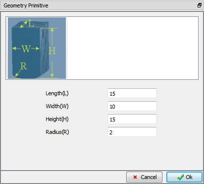
Top Die Geometry Primitive window
For more information about geometry options please refer 12. 3. 3D Geometry Data Defining
Mesh
Mesh generation options for Dies are similar to that of the billet, for more information on Mesh generation please refer Top Die Mesh.
Material
Assigning material to dies is similar to that of billet. User can assign required material from the list or can import from file or library. User can also add new material.
The material properties that the user is required to specify is a function of the material types that the user is utilizing in the simulation. This section describes the material data that may be specified for a DEFORM simulation. For more information, Please refer Material in Forming 3D setup.
Movement controls
Depending on the process requirement and equipment used user can define movement control settings for dies. For a quick Swaging setup, Speed and Mechanical press movement controls will be used as shown in Fig. 29.2.28. If user want to define other movement controls than these, then advanced radio button can be used by clicking button, these options can also be accessed by switching to Expert
mode as shown in Fig. 29.2.29. For more information about these movement controls, please refer 15. Movement Controls Definition.
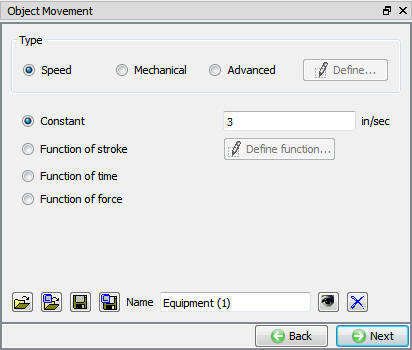
Guided Mode Movement controls window
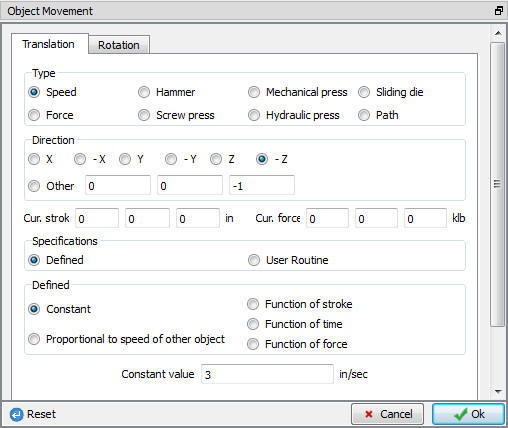
Expert mode movement controls window
Below Fig. 29.2.30. shows the positioning window.
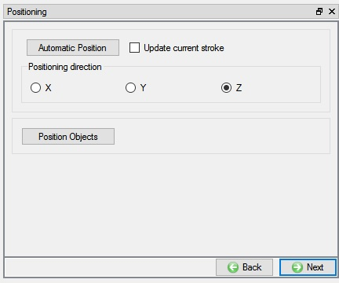
Controls window
Positioning of dies and manipulators is controlled automatically by system in swaging wizard and user requires these positioning options rarely, whenever dies are imported externally. Positioning top die would be sufficient, as the template automatically replicates the position for other dies. In a fresh setup only Top die is visible for positioning and even though other dies are positioned manually while editing a setup they are not stored, only the top die position is stored and reflected on the other dies. For more information on these positioning options please refer to below sections.
Automatic Positioning 
By clicking on this button, system automatically Positions the Objects with respect to the top die movement direction, this option works best for simple setup with three objects work piece, top die and bottom die.
Positioning Objects 
By clicking on this button, user can position the objects in required directions. Various types of Positioning Options are available such as Drag, Offset, Interference, Flip and Rotational as shown in Fig. 29.2.31. For more information about these options, please refer 16.Object Positioning.
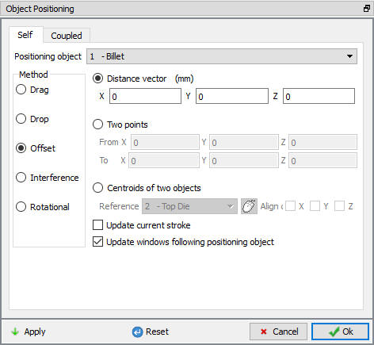
Object positioning window
Schedule positioning allows the user to define the positioning for objects in MO setup for successive operations for which DB is not generated so that the objects are positioned before generation of DB while running simulation in batch mode. This option is also rarely used in cogging process.
The purpose of inter-object relations is to define how the different objects in a simulation interact with each other. The relations table shows the current inter object relations that have been defined as shown in Fig. 29.1.32. All objects which may come in contact with each other through the course of the simulation must have a contact relation defined. This includes an object having a relationship to itself, if self-contact occurs as in case of lap. It is very important to define these relationships correctly for a simulation to model a forming process accurately.
System: By selecting this radio button, system assigns default inter-object relationships. Also user can add the lubricants if necessary by selecting Add New from pull down menu and clicking on "Edit" button or user can load the required lubricants from the library for the simulation.
By default in Cogging operation User option is selected, user would like to define his own relations then user radio button should be selected. User can add relationships by clicking on Add button as shown in Fig. 29.2.33.
Frictional and Heat Transfer Coefficients can be applied even from simulation controls window,
For more information please refer, Inter-Object Relations in Forming 3D setup.
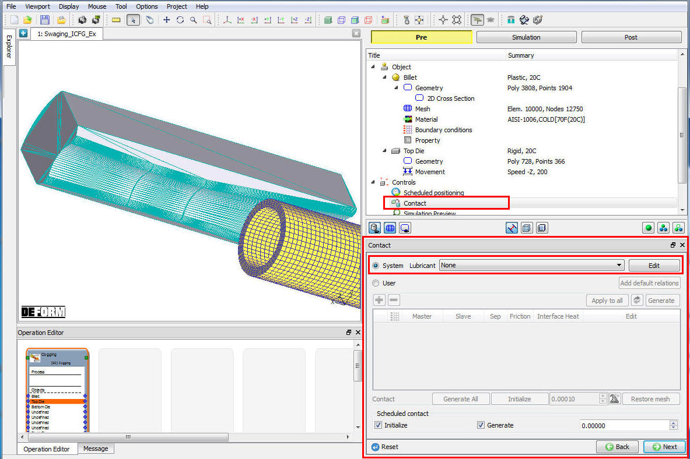
Inter object definition window in System mode
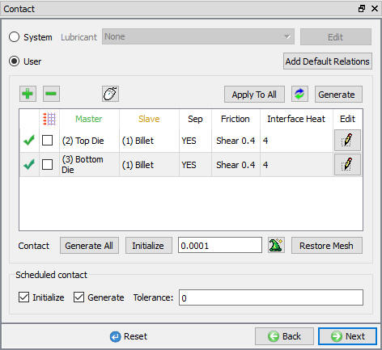
Inter-Object definition window in user mode
For more information please refer, 20.Inter-Object Relations
Simulation Preview provides an overview of the operations like deformation, dwelling, reheat..etc. to be executed based on the process definition and pass table as animation. It also gives preview of the setup at each operation. In Simulation preview window, by clicking the
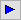
button animation would be played (See Fig. 29.2.34. and Fig. 29.2.35.)
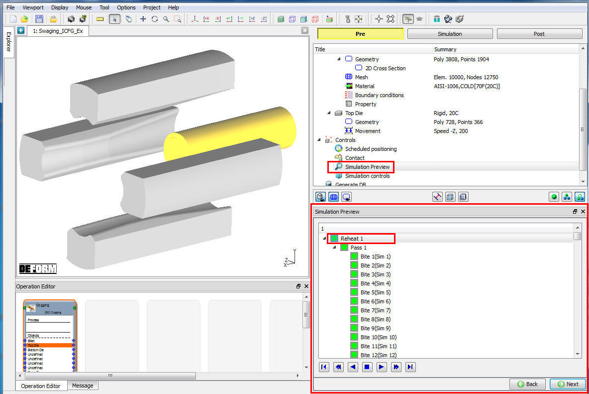
Simulation Preview window at first step
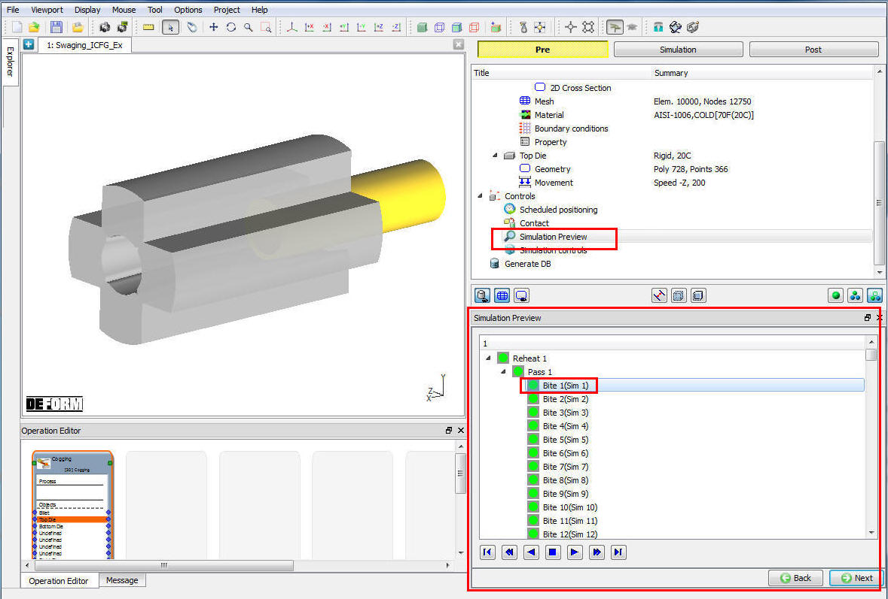
Simulation Preview window at bite
The DEFORM system solves time dependent non-linear problems by generating a series of FEM solutions at discrete time increments. At each time increment, the velocities, temperatures, and other key variables of each node in the finite element mesh are determined based on boundary conditions, thermo mechanical properties of the work piece materials and possibly solutions at previous steps. Other state variables are derived from these key values, and updated for each time increment. The length of this time step, and number of steps simulated, are determined based on the information specified in the step controls menu. Fig. 29.2.36. Sows simulation control options in Guided mode of swaging operation the basic options required for forming operation are provided here while Expert mode provides more detailed options.
In guided mode user can define simulation controls for deformation operation and heat transfer operations independently. System will generate .MST file accordingly with the information and apply simulation controls respectively for all the operations to be executed. Frictional and Heat Transfer Coefficients can also be defined here.
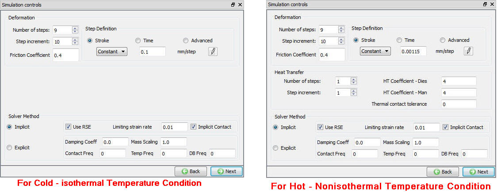
Guided mode Simulation controls window
Deformation:
Number of simulation steps (NSTEP)
The number of simulation steps parameter defines the number of steps to run from the starting step number/previous operation. The simulation will stop after this number of simulation
steps have run, unless stopping control is triggered to stop the simulation or if the simulation runs into a problem. This setting can be set independently for deformation and Heat transfer operations.
Step increment to save
The step increment (STPINC) to save in the database controls the number of steps that the system will save in the database. When a simulation runs, every step must be computed, but does not necessarily need
to be saved in the database. Storing more steps will preserve more information about the process, consequently it will require more storage space. Since Cogging operation is a lengthy process, user should be careful in defining this value so that
the .DB file size can be controlled. This setting can be set independently for deformation and Heat Transfer operations.
Friction Coefficient
The coefficient of friction between Dies and billet and Mandrel and billet is set using this option.
Step definition (DSMAX/DTMAX)
Solution step size can be controlled by time step or by displacement of the primary die. If stroke per step is specified, the primary die will move the specified amount in each time step. The total
movement of the primary die will be the displacement per step multiplied by the total number of steps. If time per step is specified, the time interval per step will be used. The die displacement per step will be the time step times the die velocity.
By default in Cogging operation Top Die is defined as primary die.
The definition of step increment control have been enhanced to include both the time and stroke dependent step functions, these options are available under Expert mode. This means, step size (both time per step and stroke per step) can now be defined as a function of time or stroke. This functionality enables finer resolution of saved model information, where it is desired. (typically towards the end of the stroke, where steep changes of die load can take place)
Heat transfer:
HT Coefficient Dies
Heat Transfer Co-efficient between dies and billet is specified here which is applicable to all operations.
HT Coefficient Manipulators
Heat Transfer Co-efficient between manipulators and billet is specified here which is applicable to all operations. It is not used in swaging, as manipulators used in cogging.
Solver method
User has an option to select whether implicit solver to be used or explicit solver.
Implicit:
Use RSE: RSE can be activated by turning on this checkbox. For more information on RSE please refer RSE[MO] under 16.Object properties.
Limiting Strain Rate: The limiting strain rate (LMTSTR) defines a limiting value of effective strain rate below which a plastic or porous material is considered rigid and behaves as Newtonian fluid like material.
Implicit Contact: Implicit contact method between objects can be activated by turning on this check box.
Simulation controls in Expert Mode
Fig. 29.2.37. shows the Simulation Controls in Expert mode. For more information and description about options in Simulation controls, Please refer 9. Simulation Controls.
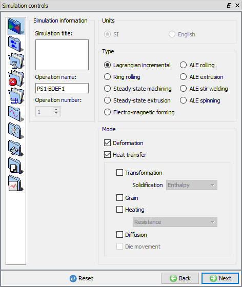
Expert mode Simulation controls
Check Data 
It checks the Data. If Data is correct we can generate DB. But while checking Data if it gives any errors or warnings then it should be corrected before generating Database. Errors will not allow the database to be generated while warnings will allow the DB to be generated.
Generate Database 
By clicking on this button, it will generate the Database of the setup to start the simulation.(See Fig. 29.2.38.)
Append Key file
Any information that is not defined in the wizard but still applicable to the process can be loaded as .key file. This option is also useful in the cases where only few values needs to be changed then those values can be defined as .key file and only .key file can be changed and simulation can be resubmitted.
Generate DB window
Once the database has been generated, switch to the Simulation mode by clicking on  button above the operation tree. Start the simulation by clicking
the
button above the operation tree. Start the simulation by clicking
the  action label and selecting run from last negative step option in Run simulation pop-up window.
action label and selecting run from last negative step option in Run simulation pop-up window.
Monitor the progress of the simulation by looking at the Simulation graphics window, Simulation Message and Simulation Log tabs, making sure that the  option is checked (See
Fig. 29.2.39.) so that message file and log files are refreshed automatically for monitoring the simulation progress. Simulation graphics tool bar options
can be used to plot basic state variables such as temperature, strain and contact for objects while simulating the problem.
option is checked (See
Fig. 29.2.39.) so that message file and log files are refreshed automatically for monitoring the simulation progress. Simulation graphics tool bar options
can be used to plot basic state variables such as temperature, strain and contact for objects while simulating the problem.
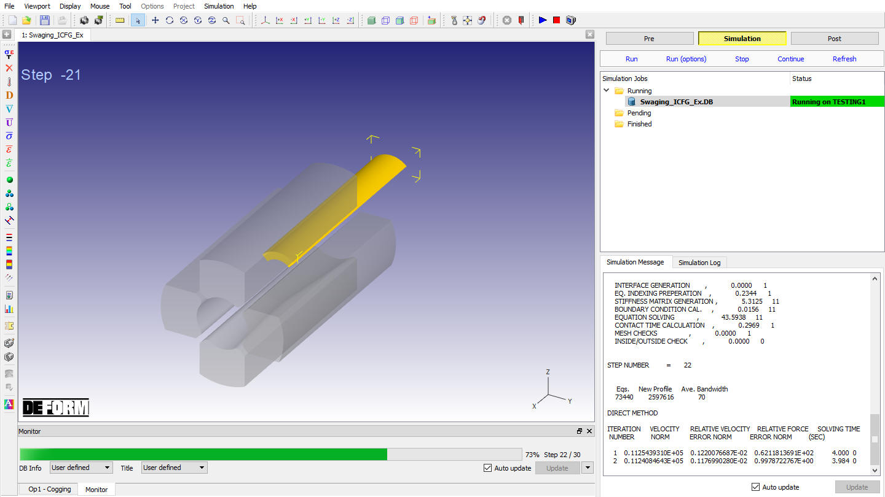
Simulation Mode
For swaging simulation, all simulation information of swaging while running will be written to ProblemID.MST file, ProblemID.MST file helps to run the cogging simulation sequentially each bite deformation and heat transfer operations as individual operations based on the settings in process window and pass table. ProblemID.MST controls the start and stop of each operation. For all operations, start and stop messages are showed in Message file. After the completion of the all operations, in Simulation Log file we will see message as "MULTIPLE OPERATION COMPLETED".
When the simulation is complete, user can review the results by switching to Post mode using the button above the Simulation tool bar. (See Fig. 29.2.41)
User can play through the Steps and plot different state variables distribution by main state variables short cut icons selection or using (State variables setup) icon for complete state variables as shown in Fig. 29.2.41
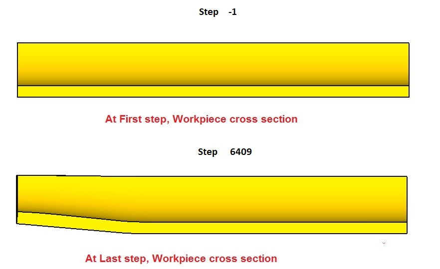
Workpiece cross scetion
Other post tools like Summary graph of state variable minimum and maximum curves, Die Load-Stroke graphs, Point tracking state variables throughout the simulation, grain flow analysis using flownet, mirroring the symmetry objects, slicing the objects and creating the animation files of results are also available.
In the Fig. 29.2.40. a quarter symmetry workpiece as shown in Fig. 29.2.41. is mirrored around axis to get full object view.
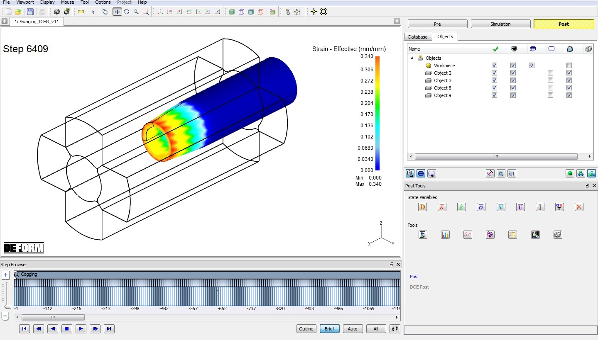
Workpiece cross section thickness
Related Topics:
6.1. Integrated Manufacturing Process Pre- Processor Layout
6.2. Integrated Manufacturing Process.Simulation layout
6.3. Integrated Manufacturing Proces Post - Processor layout